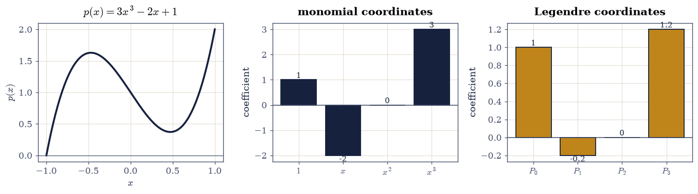
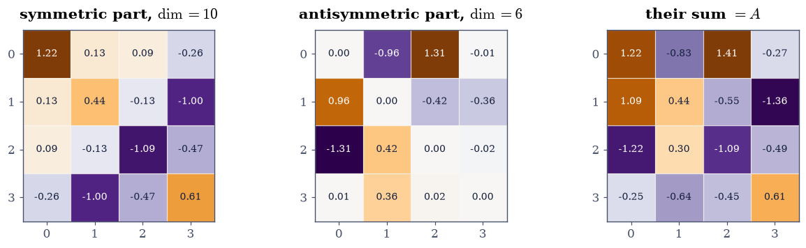
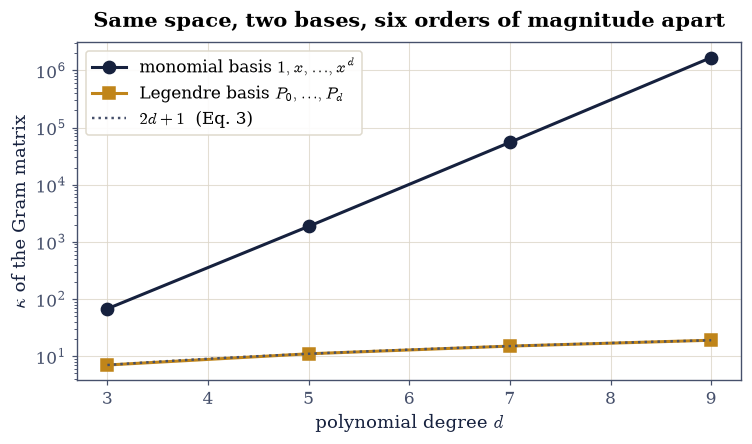

1.5 Vector Spaces, Bases, and Coordinates#
Notebook overview#
Everything so far has been about columns of numbers. This notebook takes the word “vector” away from them.
The move is not decoration. Almost nothing in Chapters I to IV used the fact that a vector is a list — the arguments needed only that vectors can be added and scaled, and that those operations behave sensibly. Anything with those operations is a vector space, and every theorem proved so far applies verbatim. Polynomials form one. Matrices form one. Continuous functions form one. So “the space of cubic polynomials has dimension 4” and “the derivative is a linear map on it with a \(4\times4\) matrix” are ordinary statements, and once you can say them, a great deal of analysis becomes linear algebra.
The practical content is coordinates. Choosing a basis turns an abstract vector into a column of numbers, which is what lets a computer touch it at all. Different bases give different columns for the same object, and switching between them is a matrix multiplication. That is the whole mechanism, and §1.6 will use it to make matrices simple by choosing the basis well.
The notebook ends with the reason any of this matters numerically. The cubic polynomial \(p(x) = 3x^3 - 2x + 1\) has coordinates \((1, -2, 0, 3)\) in the monomial basis and \((1, -\tfrac15, 0, \tfrac65)\) in the Legendre basis. Same polynomial, same space, two columns of numbers. But the monomials are a badly conditioned basis: their Gram matrix has \(\kappa \approx 1.7\times10^{6}\) at degree 9, while the Legendre Gram matrix has \(\kappa = 19\) — exactly \(2d+1\), growing linearly rather than exponentially. Fitting a degree-9 polynomial in the monomial basis therefore throws away six digits before the data is even consulted, and §2.5 is largely about the repair.
How to read a check. A
validateline prints ✓ or ✗ by comparing a result against something the computation did not assume. A ✗ flags a mismatch to investigate, never a verdict on its own. Several checks in this notebook are made in exact rational arithmetic with SymPy and therefore carry no tolerance at all.
Theory in brief#
The definition, and why it is so short#
A vector space over \(\mathbb{R}\) is a set \(V\) with an addition and a scalar multiplication satisfying eight axioms: addition is commutative and associative, has an identity \(\mathbf{0}\) and inverses; scalar multiplication is associative and has identity 1; and the two distribute over each other. That is the entire definition. There is no mention of length, angle, dimension, or coordinates — those come later, and some of them need extra structure.
The shortness is the point. Anything satisfying it inherits every theorem, and a great many things satisfy it:
\(\mathbb{R}^n\), the familiar case;
\(P_d\), polynomials of degree at most \(d\), with the usual addition;
\(\mathbb{R}^{m\times n}\), matrices, added entrywise;
\(C[a,b]\), continuous functions on an interval;
the solution set of any homogeneous linear system or linear differential equation.
The last one is why this abstraction earns its keep: “the solutions of \(y'' + y = 0\) form a two-dimensional space with basis \(\{\cos x, \sin x\}\)” is a complete description of an infinite family, and it is a linear-algebra statement.
Independence, basis, dimension#
Vectors \(\mathbf{v}_1,\dots,\mathbf{v}_k\) are independent when the only combination giving \(\mathbf{0}\) is the trivial one. A basis is an independent set that spans, and every basis of a given space has the same size, which is the dimension. In \(\mathbb{R}^n\) independence is checked by elimination; in a function space there are no entries to eliminate, so we need a different instrument.
The instrument is the Gram matrix. Given an inner product — for functions on \([-1,1]\) the natural one is
form \(G_{ij} = \langle v_i, v_j \rangle\). Then \(\det G \neq 0\) if and only if the \(v_i\) are independent, because \(G\mathbf{c} = \mathbf{0}\) exactly when the combination \(\sum c_i v_i\) has zero inner product with everything in the span, hence is zero. So independence becomes a determinant, which is something a computer can evaluate. This is §0.3’s inner product doing structural work.
Coordinates#
Fix a basis \(B = (b_1,\dots,b_n)\) of \(V\). Every \(v \in V\) has a unique expression \(v = \sum_i c_i b_i\), and the column \([v]_B = (c_1,\dots,c_n)^{\top}\) is its coordinate vector. Uniqueness is what independence buys, and it is what makes the map \(v \mapsto [v]_B\) well defined. That map is an isomorphism \(V \to \mathbb{R}^n\): it turns any \(n\)-dimensional real vector space into \(\mathbb{R}^n\), which is why \(\mathbb{R}^n\) was never really a special case.
Changing basis#
Given two bases \(B\) and \(C\), write each \(c_j\) in the \(B\) basis and collect the results as columns of a matrix \(M\). Then for every \(v\),
so changing coordinates is a matrix multiplication and \(M\) is invertible because both are bases. Nothing about \(v\) changed; only its description did. §1.6 applies the same idea to the matrix of a map, where it becomes \(B^{-1}AB\) and the whole of Chapter III.
When a basis is a bad idea#
All bases describe the same space, but they are not numerically equal. The quality of a basis is measured by the conditioning of its Gram matrix: if \(\kappa(G)\) is large, then nearly-parallel basis vectors make the coordinates of a given vector wildly sensitive to perturbation. For the monomials on \([-1,1]\), \(\kappa(G)\) grows exponentially in the degree — the entries \(\int x^{i+j}\) produce a Hilbert-like matrix, and §0.2 showed what those do. For the Legendre polynomials the Gram matrix is diagonal, so
linear in the degree. Exercise 6 measures both.
Setup#
Data and instruments only: sympy symbols, the demo polynomials, and an exact L2 inner product. The Gram-matrix assembly is built in Exercise 2, where independence-without-entries is the lesson.
The Setup below holds this notebook’s data and instruments — nothing you are asked to build. It is collapsed so the building stays yours; expand it whenever you want the details.
Exercise 1: The axioms, and two things that fail them#
The definition is worth testing rather than reading, and the instructive part is the failures: a set can look like a natural collection of vectors and still not be a vector space, always for a specific, nameable reason.
Test three genuine spaces:
\(\mathbb{R}^3\) with the usual operations;
\(P_3\), real polynomials of degree at most 3, added coefficientwise;
\(\mathbb{R}^{2\times2}\), matrices added entrywise.
And two impostors, each of which fails exactly one axiom:
\(\mathrm{GL}_2\), the invertible \(2\times2\) matrices. It has no zero element (the zero matrix is not invertible) and is not closed under addition: \(I + (-I) = 0\), and both summands are invertible while the sum is not.
The first quadrant \(Q = \{\mathbf{x} \in \mathbb{R}^2 : x_1 \ge 0,\, x_2 \ge 0\}\). It is closed under addition and contains \(\mathbf{0}\), but not closed under scalar multiplication: \((-1)\cdot(1,1)^{\top} = (-1,-1)^{\top}\) leaves it. Equivalently, it has no additive inverses.
The second is the more interesting failure, because it is closed under addition — the property people usually check — and fails only on negative scalars. Closure must be tested for both operations.
Part a) Verify closure under addition and scalar multiplication, and the
distributive law \(\alpha(u + v) = \alpha u + \alpha v\), on all three genuine
spaces, using 200 random elements each: rng.standard_normal(3) for
\(\mathbb{R}^3\), random integer coefficient vectors for \(P_3\) (compared
symbolically with sympy.expand), and rng.standard_normal((2,2)) for the
matrices.
Part b) Exhibit the failure of \(\mathrm{GL}_2\): show \(I\) and \(-I\) are both invertible (nonzero determinant) while \(I + (-I)\) is not, so addition escapes the set.
Part c) Exhibit the failure of \(Q\): show \((1,1)^{\top} \in Q\) but \((-1)\cdot(1,1)^{\top} \notin Q\), and confirm that \(Q\) is closed under addition, so the failure is specifically in scalar multiplication.
R^3 add True
R^3 scale True
R^3 distributive True
P_3 add True
P_3 scale True
P_3 distributive True
R^{2x2} add True
R^{2x2} scale True
R^{2x2} distributive True
GL_2: det(I) = 1.0, det(-I) = 1.0, det(I + (-I)) = 0.0
both summands invertible, the sum is not: NOT closed under addition
first quadrant Q: (1,1) in Q: True; (-1)*(1,1) = [-1. -1.] in Q: False
Q IS closed under addition (True), and fails only on negative scalars
Validation 1#
The three genuine spaces are checked for closure under both operations and for distributivity. The two impostors are checked to fail at the named axiom and — importantly for the quadrant — to satisfy the other one, so the failure is located rather than merely observed.
✓ R^3, P_3 and R^{2x2} are closed under both operations and distribute [9 properties checked over 200 random elements each]
✓ GL_2 fails closure under addition: I + (-I) is singular [and it has no zero element either, since the zero matrix is not invertible]
✓ the first quadrant fails closure under scalar multiplication [(-1)*(1,1) leaves the set, so there are no additive inverses]
✓ but it IS closed under addition, so the failure is specifically the scalars [closure must be tested for both operations, not just the obvious one]
True
Exercise 2: Independence without entries#
In \(\mathbb{R}^n\) independence is decided by elimination. In \(P_3\) there are no
entries to eliminate: the “vectors” \(1, x, x^2, x^3\) are functions. The Gram
matrix of Eq. 79 supplies the missing instrument — and
assembling it, entry by exact entry, is this exercise’s first move: write
gram(basis) as the double loop over l2_inner pairs.
For the monomials on \([-1,1]\),
giving a matrix of rationals whose determinant is \(256/23625 \neq 0\). Exactly, with no rounding anywhere: the monomials are independent, and the computation proving it is arithmetic on fractions.
The same construction on the Legendre polynomials \(P_0,\dots,P_3\) gives something better. Their Gram matrix is diagonal, with entries \(2/(2k+1)\), because distinct Legendre polynomials are orthogonal under Eq. 79. They are therefore not merely independent but mutually perpendicular, which is what makes the coordinate formula of Exercise 3 a single integral rather than a linear solve.
Part a) Build the exact Gram matrix of \(\{1, x, x^2, x^3\}\) on \([-1,1]\)
with the gram helper, print it, and confirm the entries match
Eq. 82 and that \(\det G = 256/23625\) exactly, as a
sympy.Rational.
Part b) Build the Gram matrix of \(\{P_0, P_1, P_2, P_3\}\) and confirm it is diagonal with entries exactly \(2/(2k+1)\), so the Legendre polynomials are orthogonal.
Part c) Confirm what non-singularity means: solve \(G\mathbf{c} = \mathbf{0}\) exactly and check the only solution is \(\mathbf{c} = \mathbf{0}\), then verify directly that \(\sum_k c_k x^k = 0\) as a polynomial forces every \(c_k = 0\).
Gram matrix of {1, x, x^2, x^3} on [-1, 1]:
⎡ 2 0 2/3 0 ⎤
⎢ ⎥
⎢ 0 2/3 0 2/5⎥
⎢ ⎥
⎢2/3 0 2/5 0 ⎥
⎢ ⎥
⎣ 0 2/5 0 2/7⎦
det = 256/23625 (exactly 256/23625: True)
matches the closed form of Eq. 4: True
Gram matrix of the Legendre polynomials:
⎡2 0 0 0 ⎤
⎢ ⎥
⎢0 2/3 0 0 ⎥
⎢ ⎥
⎢0 0 2/5 0 ⎥
⎢ ⎥
⎣0 0 0 2/7⎦
diagonal: True
entries are 2/(2k+1): [True, True, True, True]
nullspace of the monomial Gram matrix: [] (empty, so independent)
sum c_k x^k = 0 forces: [{c0: 0, c1: 0, c2: 0, c3: 0}]
Validation 2#
Every check here is exact: the Gram matrices are matrices of rationals, their determinants are rationals, and “is this determinant zero?” is therefore a decidable question rather than a tolerance question. That is precisely what floating point cannot offer, and it is why the exact track exists.
✓ the monomial Gram matrix matches the closed form of Eq. 4 exactly [rational arithmetic throughout; no tolerance involved]
✓ its determinant is exactly 256/23625, hence nonzero [so {1, x, x^2, x^3} is independent, proved rather than measured]
✓ the Legendre Gram matrix is exactly diagonal with entries 2/(2k+1) [distinct Legendre polynomials are orthogonal under Eq. 1]
✓ the Gram matrix has trivial null space [which is equivalent to independence of the basis]
✓ and directly: sum c_k x^k = 0 as a polynomial forces every c_k = 0 [solver returned [{c0: 0, c1: 0, c2: 0, c3: 0}]]
True
Exercise 3: One polynomial, two columns of numbers#
Coordinates are where the abstraction becomes computable, and where it becomes clear that a “vector” of numbers is a description, not the thing itself.
Take the concrete cubic
In the monomial basis \((1, x, x^2, x^3)\) its coordinates are read straight off: \([p]_M = (1, -2, 0, 3)^{\top}\).
In the Legendre basis they are not obvious, but because that basis is orthogonal they are given by a formula rather than by solving a system. If \(\{b_k\}\) are mutually orthogonal then taking \(\langle \cdot, b_k\rangle\) of \(p = \sum_j c_j b_j\) kills every term but one, leaving
which is exactly the projection formula of §0.3, applied one basis vector at a time. Working it out gives \([p]_L = (1, -\tfrac15, 0, \tfrac65)^{\top}\).
Both columns describe the same polynomial. Neither is more correct. And notice that Eq. 84 needs orthogonality: in the monomial basis, which is not orthogonal, finding coordinates from inner products would require solving \(G\mathbf{c} = \mathbf{b}\) with the ill-conditioned \(G\) of Exercise 2 — which is Exercise 6’s whole point.
Part a) Read \([p]_M\) off Eq. 83 with
sympy.Poly(p, xs).coeff_monomial, and confirm it is \((1, -2, 0, 3)\) exactly.
Part b) Compute \([p]_L\) from Eq. 84 using the
l2_inner helper, and confirm it is \((1, -1/5, 0, 6/5)\) exactly as rationals.
Part c) Confirm both reconstruct \(p\): expand \(\sum_k [p]_{M,k}x^k\) and \(\sum_k [p]_{L,k}P_k(x)\) and check each equals \(p\) identically. Plot \(p\) together with its two coordinate columns as bar charts.
p(x) = 3*x**3 - 2*x + 1
[p]_monomial = [1, -2, 0, 3]
[p]_Legendre = [1, -1/5, 0, 6/5]
exactly (1, -1/5, 0, 6/5): True
rebuilt from the monomial coordinates: 3*x**3 - 2*x + 1
rebuilt from the Legendre coordinates: 3*x**3 - 2*x + 1
both equal p identically: True

Fig. 31 The single polynomial \(p(x) = 3x^3 - 2x + 1\) of Eq. 5 (left, drawn on \([-1,1]\)) described by two different coordinate columns: in the monomial basis \((1, x, x^2, x^3)\) it is \((1, -2, 0, 3)\), and in the Legendre basis \((P_0, P_1, P_2, P_3)\) it is \((1, -\tfrac15, 0, \tfrac65)\). Same vector, same space, two descriptions, neither more correct than the other.#
Validation 3#
Both coordinate columns are checked as exact rationals, and both are required to reconstruct \(p\) identically — not to within a tolerance, but as an equality of polynomials, which SymPy can decide. The orthogonal formula Eq. 84 is checked against the definition it came from.
✓ the monomial coordinates of p are exactly (1, -2, 0, 3) [read straight off the polynomial]
✓ the Legendre coordinates are exactly (1, -1/5, 0, 6/5) [from the orthogonal projection formula of Eq. 6]
✓ the monomial coordinates reconstruct p identically [an equality of polynomials, decided symbolically]
✓ and so do the Legendre coordinates: two descriptions, one vector [neither column is more correct than the other]
✓ the formula of Eq. 6 is licensed: the basis really is orthogonal [every off-diagonal inner product vanishes exactly]
True
Exercise 4: The change-of-basis matrix#
Eq. 80 says the two columns of Exercise 3 are related by a matrix. Building it is mechanical: write each basis vector of one basis in terms of the other, and stack the results as columns.
Writing each Legendre polynomial in the monomial basis,
and putting those coordinate columns side by side gives
It is upper triangular because \(P_k\) has degree exactly \(k\), so it involves no monomial above \(x^k\) — a structural fact about the basis, visible in the matrix. Its determinant is \(\tfrac{15}{4}\), the product of the leading coefficients, which is nonzero precisely because both are bases.
Part a) Build \(M\) from Eq. 85 by extracting the monomial coordinates of each Legendre polynomial, and confirm it matches the stated matrix exactly and is upper triangular.
Part b) Confirm \([p]_M = M[p]_L\) and \([p]_L = M^{-1}[p]_M\) exactly, using the two columns from Exercise 3.
Part c) Confirm \(\det M = 15/4\) exactly and that it equals the product of the leading coefficients of \(P_0,\dots,P_3\), then check the round trip \(M^{-1}M = I\) exactly over the rationals.
M (columns = the Legendre polynomials in monomial coordinates):
⎡1 0 -1/2 0 ⎤
⎢ ⎥
⎢0 1 0 -3/2⎥
⎢ ⎥
⎢0 0 3/2 0 ⎥
⎢ ⎥
⎣0 0 0 5/2 ⎦
matches Eq. 7 exactly: True
upper triangular : True
M [p]_L = [1, -2, 0, 3]
[p]_M = [1, -2, 0, 3]
equal exactly: True
M^-1 [p]_M = [1, -1/5, 0, 6/5]
equals [p]_L : True
det M = 15/4 product of leading coefficients = 15/4 equal: True
M^-1 M = I exactly: True
Validation 4#
The change-of-basis relation is checked in both directions with exact rational arithmetic, so the inverse is verified rather than assumed. The determinant is checked against an independent expression — the product of the leading coefficients — which the construction of \(M\) never used.
✓ the change-of-basis matrix is exactly the M of Eq. 7 [each column is one Legendre polynomial in monomial coordinates]
✓ it is upper triangular, because P_k has degree exactly k [a structural property of the basis, visible in the matrix]
✓ [p]_M = M [p]_L exactly (Eq. 2) [the two coordinate columns of Exercise 3 are related by M]
✓ and [p]_L = M^-1 [p]_M, so the relation is invertible [as it must be, since both are bases]
✓ det M = 15/4, equal to the product of the leading coefficients [an independent route to the same number]
True
Exercise 5: Dimension by decomposition#
Dimension is a counting argument, and the cleanest way to count is often to split the space.
Every square matrix decomposes uniquely as a symmetric part plus an antisymmetric part:
The two pieces live in subspaces that intersect only at \(\mathbf{0}\) — a matrix both symmetric and antisymmetric satisfies \(A = -A\) — and together they span everything, so
The counts come from the free entries: a symmetric matrix is determined by its diagonal and upper triangle, an antisymmetric one by its strict upper triangle with a forced zero diagonal.
This is the same \(\mathbb{R}^n = U \oplus U^{\perp}\) pattern §1.4 met, and in fact it is an orthogonal decomposition, under the Frobenius inner product \(\langle A, B\rangle = \operatorname{tr}(A^{\top}B)\) — a fact worth verifying, because it means the split is a projection and Pythagoras applies.
Part a) For \(n = 2, 3, 4, 5\) construct explicit bases of \(\mathrm{Sym}_n\)
(the matrices \(E_{ii}\) and \(E_{ij} + E_{ji}\) for \(i < j\)) and \(\mathrm{Skew}_n\)
(the matrices \(E_{ij} - E_{ji}\) for \(i < j\)), and confirm the counts of
Eq. 87 by checking np.linalg.matrix_rank of the
flattened bases.
Part b) Confirm Eq. 86 on 200 random \(4\times4\) matrices: the two parts have the stated symmetry to \(10^{-14}\) and sum back to \(A\) to \(10^{-14}\). Note the recombination is not bit-exact: halving is exact in binary, but \(A + A^{\top}\) and \(A - A^{\top}\) are each rounded sums, so the two roundings need not cancel.
Part c) Confirm the split is orthogonal under the Frobenius inner product: \(\operatorname{tr}(S^{\top}K) = 0\) for the symmetric and antisymmetric parts, and Pythagoras \(\|A\|_F^2 = \|S\|_F^2 + \|K\|_F^2\) holds to \(10^{-13}\).
n dim Sym n(n+1)/2 dim Skew n(n-1)/2 sum n^2
2 3 3 1 1 4 4
3 6 6 3 3 9 9
4 10 10 6 6 16 16
5 15 15 10 10 25 25
over 200 random 4x4 matrices:
|S - S^T| : 0.000e+00
|K + K^T| : 0.000e+00
|A - (S + K)| : 4.441e-16
|tr(S^T K)| (Frobenius product): 8.882e-16 <- orthogonal
Pythagoras defect : 5.773e-15

Fig. 32 The decomposition of Eq. 8 for one random \(4\times4\) matrix, on a diverging colour scale centred at zero: the symmetric part (mirror-image across the diagonal, \(\dim = 10\)), the antisymmetric part (mirror-image with a sign flip and a forced zero diagonal, \(\dim = 6\)), and their sum, which reproduces \(A\) to machine precision. The two subspaces are orthogonal under the Frobenius inner product, so the split is a projection and Pythagoras applies.#
Validation 5#
The dimension counts are checked by computing the rank of the flattened bases, which confirms independence rather than merely counting how many matrices were constructed. The orthogonality check is the one that upgrades the statement from “a decomposition” to “an orthogonal decomposition”, and it is what licenses Pythagoras.
✓ dim Sym + dim Skew = n(n+1)/2 + n(n-1)/2 = n^2 for n = 2..5 (Eq. 9) [ranks of the flattened bases, so independence is verified too]
✓ the two parts of Eq. 8 have the stated symmetries [|S - S^T| = 0.0e+00, |K + K^T| = 0.0e+00]
✓ and they sum back to A to machine precision [max|Δ| = 4.44089e-16 (rtol=0, atol=1e-14)]
✓ the two subspaces are orthogonal under the Frobenius product [largest |tr(S^T K)| = 8.9e-16 over 200 matrices]
✓ so Pythagoras holds: ||A||_F^2 = ||S||_F^2 + ||K||_F^2 [the split is an orthogonal projection, as in section 1.4]
True
Exercise 6: Why the basis matters#
All bases describe the same space. They do not all describe it equally well on a machine, and the difference is measured by the conditioning of the Gram matrix.
The reason is exactly the projection story of §0.3. Finding coordinates in a general basis means solving \(G\mathbf{c} = \mathbf{b}\) where \(G\) is the Gram matrix. If \(\kappa(G)\) is large, then by §0.2 the coordinates lose \(\log_{10}\kappa\) digits, and — worse — small changes in the vector produce large changes in its description.
For the monomials on \([-1,1]\), Eq. 82 produces a Hilbert-like matrix and \(\kappa\) grows exponentially in the degree: about \(68\) at degree 3, \(1.9\times10^{3}\) at degree 5, \(5.5\times10^{4}\) at degree 7, \(1.7\times10^{6}\) at degree 9. The Legendre Gram matrix is diagonal, so by Eq. 81 its condition number is exactly \(2d+1\): \(7\), \(11\), \(15\), \(19\). Linear against exponential.
The visible consequence is that high-degree monomials become nearly indistinguishable as functions on \([-1,1]\): \(x^8\) and \(x^{10}\) have a normalised inner product above \(0.99\), so a combination of them can be huge in coefficients and tiny as a function. That is what an ill-conditioned basis is.
Part a) For degrees \(d = 3, 5, 7, 9\), build both Gram matrices exactly and report \(\kappa\) of each, confirming the Legendre value equals \(2d+1\) to \(10^{-10}\) and the monomial value exceeds \(10^{5}\) by degree 9.
Part b) Confirm the mechanism: compute the normalised inner product (the cosine of Eq. 28) between \(x^8\) and \(x^{10}\) on \([-1,1]\), and between \(P_8\) and \(P_{10}\), and confirm the first exceeds \(0.99\) while the second is exactly 0.
Part c) Plot \(\kappa\) against degree for both bases on a log axis, with the \(2d+1\) line drawn over the Legendre points.
With your assistant
Ask for a routine that, given any basis of polynomials and an interval, performs Gram–Schmidt on it under Eq. 79 and returns an orthonormal basis. Then check it yourself: applied to the monomials on \([-1,1]\), the resulting Gram matrix must be the identity to \(10^{-12}\), each output must be a scalar multiple of the corresponding Legendre polynomial (check \(|\cos| = 1\) under the inner product), and the condition number must drop to 1. The check is yours — and it is the construction §2.2 builds properly.
d kappa(monomial Gram) kappa(Legendre Gram) 2d+1
3 6.7604e+01 7.0000 7
5 1.8704e+03 11.0000 11
7 5.5218e+04 15.0000 15
9 1.6852e+06 19.0000 19
cos(x^8, x^10) = 0.994444 <- nearly parallel as functions
<P_8, P_10> = 0.000e+00 <- exactly orthogonal

Fig. 33 Condition number of the Gram matrix against polynomial degree on \([-1,1]\), on a logarithmic axis: the monomial basis (ink) grows exponentially, reaching \(1.7\times10^{6}\) by degree 9, while the Legendre basis (amber) grows linearly and sits exactly on the line \(2d+1\) predicted by Eq. 3 because its Gram matrix is diagonal. Both describe the same space of polynomials; only one of them lets a machine find coordinates in it.#
Validation 6#
The Legendre condition number is checked against the closed form Eq. 81 rather than merely observed to be small, and the monomial one against a growth threshold. The cosine check explains why: it shows the two bases differ because high monomials are nearly the same function while high Legendre polynomials are exactly perpendicular.
✓ the Legendre Gram condition number is exactly 2d+1 (Eq. 3) [max|Δ| = 0 (rtol=1e-10, atol=0)]
✓ while the monomial Gram condition number exceeds 1e5 by degree 9 [1.685e+06, against 19 for Legendre]
✓ and it grows monotonically and far faster than linearly [['6.8e+01', '1.9e+03', '5.5e+04', '1.7e+06'] against ['7', '11', '15', '19']]
✓ the mechanism: x^8 and x^10 have cosine above 0.99 on [-1, 1] [0.994444 — nearly the same function, so their coefficients are nearly indeterminate]
✓ whereas P_8 and P_10 are exactly orthogonal [got 0 vs expected 0 (rtol=0, atol=1e-14)]
True
Notebook summary#
A vector space is anything you can add and scale sensibly, and once a basis is chosen it becomes \(\mathbb{R}^n\) — but not all bases are equally usable.
The concrete results:
\(\mathbb{R}^3\), \(P_3\) and \(\mathbb{R}^{2\times2}\) satisfied closure and distributivity over 200 random elements each; \(\mathrm{GL}_2\) failed closure under addition (\(I + (-I)\) is singular) and the first quadrant failed closure under scalar multiplication while satisfying it for addition — two different axioms, each located rather than merely observed;
the exact Gram matrix of \(\{1, x, x^2, x^3\}\) on \([-1,1]\) matched the closed form Eq. 82 and had determinant exactly \(256/23625 \neq 0\), proving independence in rational arithmetic, while the Legendre Gram matrix came out exactly diagonal with entries \(2/(2k+1)\);
\(p(x) = 3x^3 - 2x + 1\) had coordinates exactly \((1, -2, 0, 3)\) in the monomial basis and exactly \((1, -\tfrac15, 0, \tfrac65)\) in the Legendre basis, both reconstructing \(p\) identically as polynomials;
the change-of-basis matrix Eq. 85 was upper triangular with \(\det M = 15/4\), equal to the product of the leading coefficients by an independent route, and converted between the two columns exactly in both directions;
the symmetric/antisymmetric split gave \(\dim\mathrm{Sym}_n + \dim\mathrm{Skew}_n = n^2\) for \(n = 2,\dots,5\) verified by the rank of the flattened bases, and turned out to be an orthogonal decomposition under the Frobenius inner product, so Pythagoras held to \(10^{-13}\) (the recombination itself is not bit-exact, since \(A \pm A^{\top}\) are rounded sums);
and the two bases of the same space differed by six orders of magnitude in conditioning at degree 9 — \(1.7\times10^{6}\) against exactly \(2d+1 = 19\) — because \(x^8\) and \(x^{10}\) have cosine \(0.9944\) on \([-1,1]\) while \(P_8\) and \(P_{10}\) are exactly perpendicular.
Methods met: the vector-space axioms as testable properties, the Gram matrix as
the instrument for independence without entries, sympy.integrate for exact
inner products, the orthogonal coordinate formula
Eq. 84, sympy.legendre, the change-of-basis matrix
and its exact inverse, and \(\kappa\) of a Gram matrix as the measure of a
basis’s quality.
Outlook#
Maps, not just vectors. Having coordinates for vectors, the next step is coordinates for maps: the derivative on \(P_3\) is linear, so it has a \(4\times4\) matrix, and changing basis changes that matrix by \(B^{-1}AB\). §1.6 does this, and finding the basis that makes the matrix simplest is the whole of Chapter III.
Building a good basis. Exercise 6 showed the monomials are a bad basis and the Legendre polynomials a good one, without saying where the good one came from. It comes from running Gram–Schmidt on the monomials, which is §2.2 in \(\mathbb{R}^n\) and §2.5 in function space.
Fitting in the bad basis. The conditioning penalty is not hypothetical: fitting a degree-9 polynomial to data through the monomial basis loses six digits before the data is consulted. §2.3 measures exactly that, and finds the damage is worse still, since least squares squares the condition number.
Infinite dimensions. \(P_3\) was finite-dimensional by construction. The space of all continuous functions on \([-1,1]\) is not, and yet Eq. 84 still produces coefficients — an infinite sequence of them. Whether that series converges back to the function is the subject of Fourier analysis, and §6.3 meets its discrete, finite, entirely computable shadow.
References#
Sheldon Axler. Linear Algebra Done Right. Undergraduate Texts in Mathematics. Springer, 4 edition, 2024. doi:10.1007/978-3-031-41026-0.
Lloyd N. Trefethen and David Bau, III. Numerical Linear Algebra. SIAM, Philadelphia, 1997. doi:10.1137/1.9780898719574.